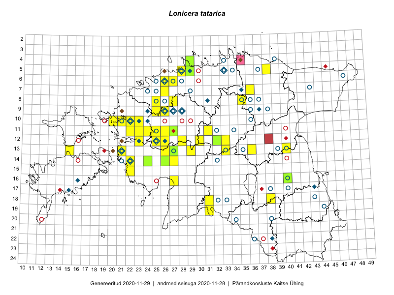

Lonicera tatarica — tatari kuslapuu
Kaardile koondatud taksonid: Lonicera tatarica L. (105)

Kaart põhineb 105 kirjel, neist:
vaatlusi 97
eksemplare 8
Kaasaegsed1 leiukohad asuvad 47 ruudus.
Andmed “Eesti taimede levikuatlasest”,2 sulgudes ruutude arv:3
● 1971–2005 (29)
○ 1921–1970 (51)
△ kuni 1920 (0)
+ hävinud (0)
? kaheldav (0)
Lisaruudud teistest andmebaasidest:4
ELF: 2006– . . . (0)
PKÜ: 2006– . . . (1)
ELF: 1971–2005 (0)
PKÜ: 1997–2005 (5)
| Ruut | Vaatleja(d) | Vaatlusaeg | Kirje PlutoFis |
|---|---|---|---|
| 12-28 | Tiit Hallikma, Toomas Kukk, Indrek Tammekänd | 2015-06-09 | ruut/ala: Lonicera tatarica L. |
| 13-26 | Toomas Kukk, Thea Kull, Timo Luhamäe, Ott Luuk, Peedu Saar | 2015-06-28 | ruut/ala: Lonicera tatarica L. |
| 13-15 | Toomas Kukk, Eerik Leibak | 2015-08-10 | ruut/ala: Lonicera tatarica L. |
| 12-33 | Toomas Kukk, Indrek Tammekänd | 2015-05-10 | ruut/ala: Lonicera tatarica L. |
| 13-40 | Peedu Saar | 2015-08-10 | ruut/ala: Lonicera tatarica L. |
| 11-31 | Ott Luuk, Toivo Sepp | 2015-07-12 | ruut/ala: Lonicera tatarica L. |
| 14-26 | Tiit Hallikma, Indrek Tammekänd, Toomas Kukk | 2015-06-08 | ruut/ala: Lonicera tatarica L. |
| 08-35 | Jana-Maria Habicht, Ester Valdvee, Kirke Pilvik | 2015-07-14 | ruut/ala: Lonicera tatarica L. |
| 13-36 | Toivo Sepp, Eerik Leibak | 2015-05-13 | ruut/ala: Lonicera tatarica L. |
| 13-29 | Liina Oja, Ott Luuk | 2015-05-09 | ruut/ala: Lonicera tatarica L. |
| 12-32 | Meeli Mesipuu, Timo Luhamäe | 2015-06-11 | ruut/ala: Lonicera tatarica L. |
| 12-25 | Aat Sarv | 2015-05-27 | ruut/ala: Lonicera tatarica L. |
| 06-26 | Mari Metsoja, Jaak-Albert Metsoja | 2015-05-24 | ruut/ala: Lonicera tatarica L. |
| 07-26 | Mari Metsoja, Jaak-Albert Metsoja | 2015-05-30 | ruut/ala: Lonicera tatarica L. |
| 08-25 | Mari Metsoja, Jaak-Albert Metsoja | 2015-05-31 | ruut/ala: Lonicera tatarica L. |
| 11-25 | Hanna-Eliisa Luts, Tõnu Ploompuu | 2015-07-28 | ruut/ala: Lonicera tatarica L. |
| 11-26 | Hanna-Eliisa Luts, Tõnu Ploompuu | 2015-07-28 | ruut/ala: Lonicera tatarica L. |
| 06-27 | Tõnu Ploompuu | 2015-08-11 | ruut/ala: Lonicera tatarica L. |
| 11-23 | Hanna-Eliisa Luts, Marian Hiie, Tõnu Ploompuu | 2015-08-04 | ruut/ala: Lonicera tatarica L. |
| 09-25 | Meelis Muuga, Tõnu Ploompuu | 2015-08-17 | ruut/ala: Lonicera tatarica L. |
| 12-26 | Andrus Jair, Tõnu Ploompuu | 2015-05-17 | ruut/ala: Lonicera tatarica L. |
| 09-26 | Tõnu Ploompuu | 2015-05-20 | ruut/ala: Lonicera tatarica L. |
| 10-21 | Tõnu Ploompuu | 2015-05-02 | ruut/ala: Lonicera tatarica L. |
| 10-20 | Tõnu Ploompuu | 2015-05-02 | ruut/ala: Lonicera tatarica L. |
| 10-21 | Tõnu Ploompuu | 2015-08-21 | ruut/ala: Lonicera tatarica L. |
| 10-22 | Tõnu Ploompuu | 2015-05-20 | ruut/ala: Lonicera tatarica L. |
| 10-23 | Sirje Lagle, Tõnu Ploompuu | 2015-05-15 | ruut/ala: Lonicera tatarica L. |
| 11-22 | Tõnu Ploompuu | 2015-06-03 | ruut/ala: Lonicera tatarica L. |
| 11-27 | Andrus Jair, Tõnu Ploompuu | 2015-05-17 | ruut/ala: Lonicera tatarica L. |
| 09-26 | Thea Kull, Oliver Parrest | 2016-07-06 | ruut/ala: Lonicera tatarica L. |
| 14-26 | Maret Gerz, Liina Oja | 2016-07-08 | ruut/ala: Lonicera tatarica L. |
| 12-30 | Aat Sarv, Indrek Tammekänd | 2016-07-22 | ruut/ala: Lonicera tatarica L. |
| 12-23 | Mari Reitalu, Oliver Parrest | 2016-07-05 | ruut/ala: Lonicera tatarica L. |
| 19-31 | Ott Luuk, Peedu Saar | 2016-10-06 | ruut/ala: Lonicera tatarica L. |
| 18-38 | Ott Luuk, Thea Kull | 2016-08-23 | ruut/ala: Lonicera tatarica L. |
| 15-22 | Meeli Mesipuu, Sirje Azarov | 2016-07-04 | ruut/ala: Lonicera tatarica L. |
| 08-27 | Mari Reitalu, Eerik Leibak | 2017-08-08 | ruut/ala: Lonicera tatarica L. |
| 11-25 | Toomas Kukk, Eerik Leibak | 2017-08-10 | ruut/ala: Lonicera tatarica L. |
| 11-24 | Eerik Leibak, Toomas Kukk | 2017-08-10 | ruut/ala: Lonicera tatarica L. |
| 14-27 | Ott Luuk, Indrek Tammekänd | 2017-08-11 | ruut/ala: Lonicera tatarica L. |
| 13-26 | Toomas Kukk, Thea Kull, Timo Luhamäe, Ott Luuk, Peedu Saar | 2015-06-28 | punkt: Lonicera tatarica L. |
| 13-26 | Toomas Kukk, Thea Kull, Timo Luhamäe, Ott Luuk, Peedu Saar | 2015-06-28 | punkt: Lonicera tatarica L. |
| 13-15 | Toomas Kukk, Eerik Leibak | 2015-08-10 | punkt: Lonicera tatarica L. |
| 12-28 | Tiit Hallikma, Indrek Tammekänd, Toomas Kukk | 2015-06-09 | punkt: Lonicera tatarica L. |
| 12-33 | Toomas Kukk, Indrek Tammekänd | 2015-05-10 | punkt: Lonicera tatarica L. |
| 14-26 | Toomas Kukk, Tiit Hallikma, Indrek Tammekänd | 2015-06-08 | punkt: Lonicera tatarica L. |
| 13-40 | Peedu Saar | 2015-08-10 | punkt: Lonicera tatarica L. |
| 06-27 | Toomas Kukk | 2015-06-19 | punkt: Lonicera tatarica L. |
| 14-26 | Tiit Hallikma, Indrek Tammekänd, Toomas Kukk | 2015-06-08 | punkt: Lonicera tatarica L. |
| 14-26 | Tiit Hallikma, Indrek Tammekänd, Toomas Kukk | 2015-06-08 | punkt: Lonicera tatarica L. |
| 11-31 | Ott Luuk, Toivo Sepp | 2015-07-12 | punkt: Lonicera tatarica L. |
| 15-22 | Vilma Kuusk, Indrek Tammekänd | 2015-06-30 | punkt: Lonicera tatarica L. |
| 08-35 | Jana-Maria Habicht, Ester Valdvee, Kirke Pilvik | 2015-07-14 | punkt: Lonicera tatarica L. |
| 08-35 | Jana-Maria Habicht, Ester Valdvee | 2015-07-15 | punkt: Lonicera tatarica L. |
| 08-35 | Jana-Maria Habicht, Ester Valdvee | 2015-07-15 | punkt: Lonicera tatarica L. |
| 13-36 | Toivo Sepp, Eerik Leibak | 2015-05-13 | punkt: Lonicera tatarica L. |
| 13-29 | Liina Oja, Ott Luuk | 2015-05-09 | punkt: Lonicera tatarica L. |
| 18-31 | Ott Luuk, Indrek Tammekänd | 2015-05-22 | punkt: Lonicera tatarica L. |
| 19-31 | Ott Luuk, Indrek Tammekänd | 2015-05-22 | punkt: Lonicera tatarica L. |
| 12-32 | Meeli Mesipuu, Timo Luhamäe | 2015-06-11 | punkt: Lonicera tatarica L. |
| 14-22 | Peedu Saar, Toomas Kukk | 2016-05-14 | punkt: Lonicera tatarica L. |
| 11-26 | Tiit Hallikma, Ott Luuk | 2016-05-12 | punkt: Lonicera tatarica L. |
| 14-26 | Liina Oja, Maret Gerz | 2016-07-08 | punkt: Lonicera tatarica L. |
| 09-26 | Thea Kull, Oliver Parrest | 2016-07-06 | punkt: Lonicera tatarica L. |
| 05-38 | Tõnu Ploompuu, Eerik Leibak | 2016-07-27 | punkt: Lonicera tatarica L. |
| 15-22 | Sirje Azarov, Meeli Mesipuu | 2016-07-04 | punkt: Lonicera tatarica L. |
| 15-22 | Sirje Azarov, Meeli Mesipuu | 2016-07-04 | punkt: Lonicera tatarica L. |
| 12-30 | Aat Sarv, Indrek Tammekänd | 2016-07-22 | punkt: Lonicera tatarica L. |
| 07-36 | Karin Kikas, Elle Rajandu | 2016-06-27 | punkt: Lonicera tatarica L. |
| 18-38 | Thea Kull, Ott Luuk | 2016-08-23 | punkt: Lonicera tatarica L. |
| 12-23 | Mari Reitalu, Oliver Parrest | 2016-07-05 | punkt: Lonicera tatarica L. |
| 19-31 | Peedu Saar, Ott Luuk | 2016-10-06 | punkt: Lonicera tatarica L. |
| 06-26 | Jaak-Albert Metsoja | 2015-05-23 | punkt: Lonicera tatarica L. |
| 08-25 | Jaak-Albert Metsoja, Mari Metsoja | 2015-05-31 | punkt: Lonicera tatarica L. |
| 06-27 | Tõnu Ploompuu | 2015-08-11 | punkt: Lonicera tatarica L. |
| 16-27 | Indrek Tammekänd | 2015-06-25 | punkt: Lonicera tatarica L. |
| 09-25 | Meelis Muuga, Tõnu Ploompuu | 2015-08-17 | punkt: Lonicera tatarica L. |
| 10-22 | Tõnu Ploompuu | 2015-08-21 | punkt: Lonicera tatarica L. |
| 11-25 | Hanna-Eliisa Luts, Tõnu Ploompuu | 2015-07-28 | punkt: Lonicera tatarica L. |
| 11-26 | Hanna-Eliisa Luts, Tõnu Ploompuu | 2015-07-28 | punkt: Lonicera tatarica L. |
| 09-26 | Tõnu Ploompuu | 2015-05-20 | punkt: Lonicera tatarica L. |
| 09-26 | Tõnu Ploompuu | 2015-05-20 | punkt: Lonicera tatarica L. |
| 10-20 | Tõnu Ploompuu | 2015-05-02 | punkt: Lonicera tatarica L. |
| 10-21 | Tõnu Ploompuu | 2015-05-02 | punkt: Lonicera tatarica L. |
| 10-22 | Tõnu Ploompuu | 2015-06-03 | punkt: Lonicera tatarica L. |
| 10-22 | Tõnu Ploompuu | 2015-06-03 | punkt: Lonicera tatarica L. |
| 10-22 | Tõnu Ploompuu | 2015-06-03 | punkt: Lonicera tatarica L. |
| 10-23 | Tõnu Ploompuu, Sirje Lagle | 2015-05-15 | punkt: Lonicera tatarica L. |
| 11-22 | Tõnu Ploompuu | 2015-06-03 | punkt: Lonicera tatarica L. |
| 11-27 | Andrus Jair, Tõnu Ploompuu | 2015-05-17 | punkt: Lonicera tatarica L. |
| 12-26 | Andrus Jair, Tõnu Ploompuu | 2015-05-17 | punkt: Lonicera tatarica L. |
| 13-33 | Ott Luuk, Indrek Tammekänd | 2016-07-21 | punkt: Lonicera tatarica L. |
| 08-27 | Mari Reitalu, Eerik Leibak | 2017-08-08 | punkt: Lonicera tatarica L. |
| 11-24 | Toomas Kukk, Eerik Leibak | 2017-08-10 | punkt: Lonicera tatarica L. |
| 11-25 | Eerik Leibak, Toomas Kukk | 2017-08-10 | punkt: Lonicera tatarica L. |
| 13-21 | Mari Reitalu | 2018-07-05 | punkt: Lonicera tatarica L. |
| 14-27 | Ott Luuk, Indrek Tammekänd | 2017-08-11 | punkt: Lonicera tatarica L. |
| 14-24 | Toomas Kukk | 2006-06-06 | TAA0077731: Lonicera tatarica L. |
| 14-24 | Toomas Kukk | 2006-06-06 | TAA0077732: Lonicera tatarica L. |
| 14-26 | Toomas Kukk, Tiit Hallikma, Indrek Tammekänd | 2015-06-08 | TAA0135063: Lonicera tatarica L. |
| 04-29 | Nele Jõessar, Tõnu Ploompuu, Sander Laherand | 2016-07-25 | TAA0135856: Lonicera tatarica L. |
| 13-27 | Indrek Tammekänd | 2016-08-18 | TAA0140025: Lonicera tatarica L. |
| 12-32 | Meeli Mesipuu, Timo Luhamäe | 2015-06-11 | TAA0143878: Lonicera tatarica L. |
| 11-27 | Meeli Mesipuu | 2016-07-08 | TAA0144145: Lonicera tatarica L. |
| 05-29 | Thea Kull | 2019-06-12 | TAA0148042: Lonicera tatarica L. |
Kaasaegsed leiukohad (tähistatud värvitud ruutudega) põhinevad peamiselt 2014–2019 välitööandmetel. Väiksemal määral on andmebaasi kantud vanemaid leiuandmeid aastatest 2006–2013.↩︎
Kukk, T., Kull, T., Eesti taimede levikuatlas. Eesti Maaülikool, Põllumajandus- ja Keskkonnainstituut, Tartu, 2005.↩︎
NB! 2005. aasta atlase andmestikus katavad uuemad leiud vanemaid. Näiteks kui liik on ruudus registreeritud 1971–2005, siis pole võimalik öelda, kas ta oli sellest ruudust teada ka enne 1970. aastat. Vana atlase andmetel hävinud ja kaheldavaid leiukohti pole hilisemate (taas)leidude põhjal korrigeeritud.↩︎
Eestimaa Looduse Fondi (ELF) ja Pärandkoosluste Kaitse Ühingu (PKÜ) andmebaasid sisaldavad inventeeritud koosluste kirjeldusi ja liigiloendeid. Neist andmekogudest on kaardile lisatud lisatud vaid need ruudud, millest uue atlase andmekogus taksoni kohta kirjeid veel pole. Kõrvale on jäetud teadaolevalt kaheldavad määrangud. Kaartidel katavad uuema perioodi andmed vanemaid, PKÜ omad ELFi omi. Kattumise tõttu võib kaardil näha olla vähem mingi kategooria ruute kui legendis olev arv näitab. ELFi ja PKÜ andmed ei kajastu hetkel vaatluste tabelis ega ruutude liigiloendites.↩︎